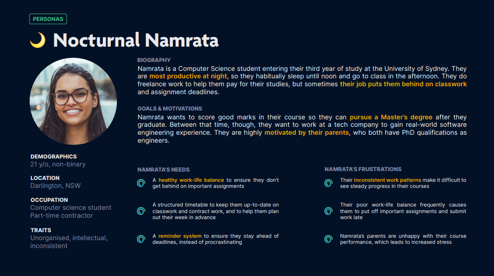
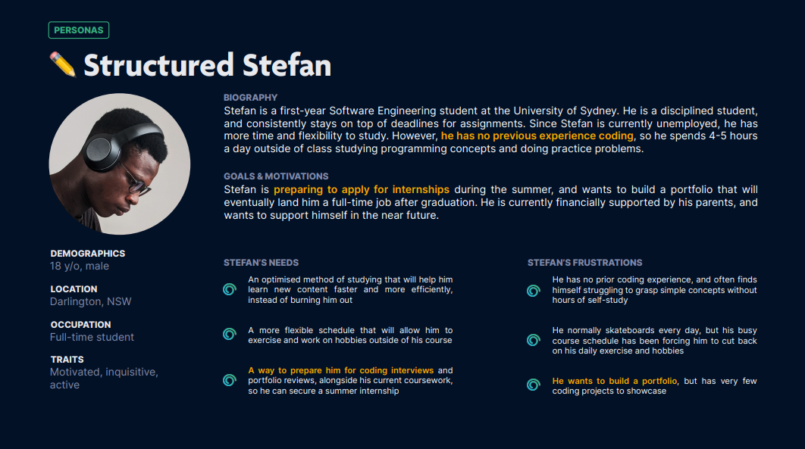
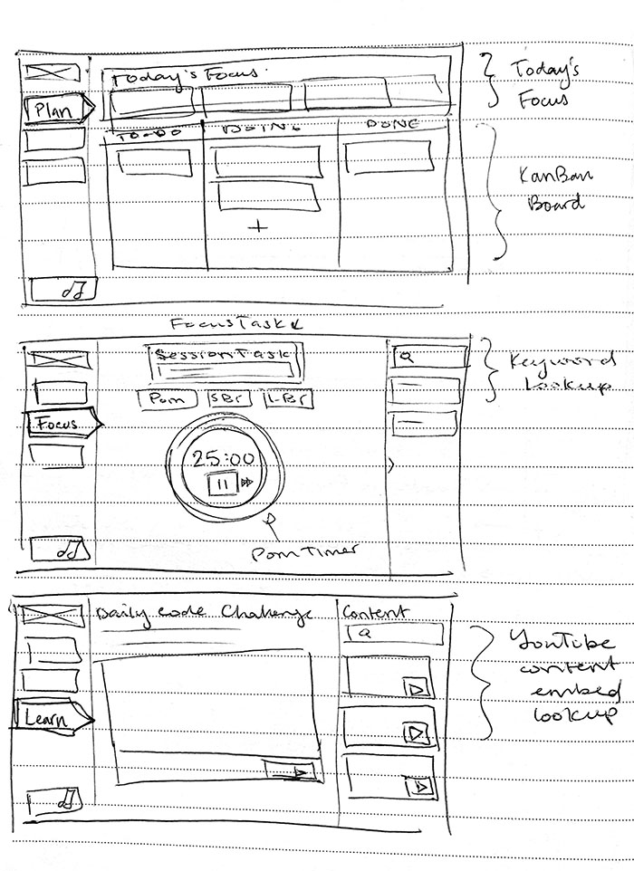
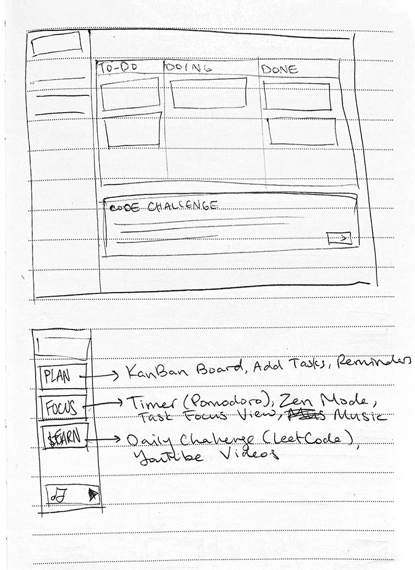
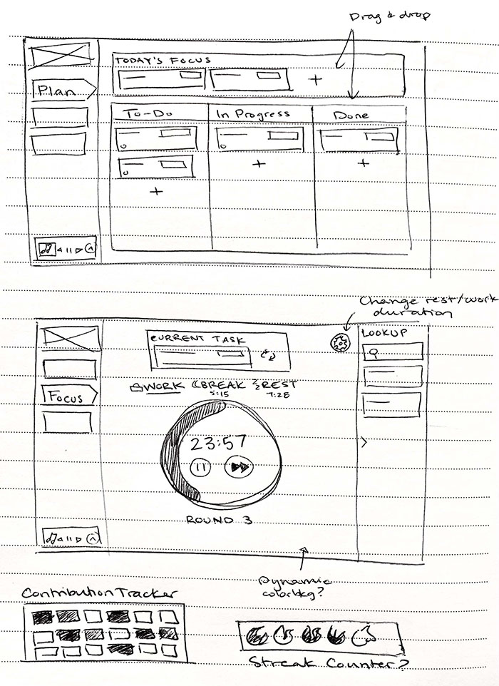
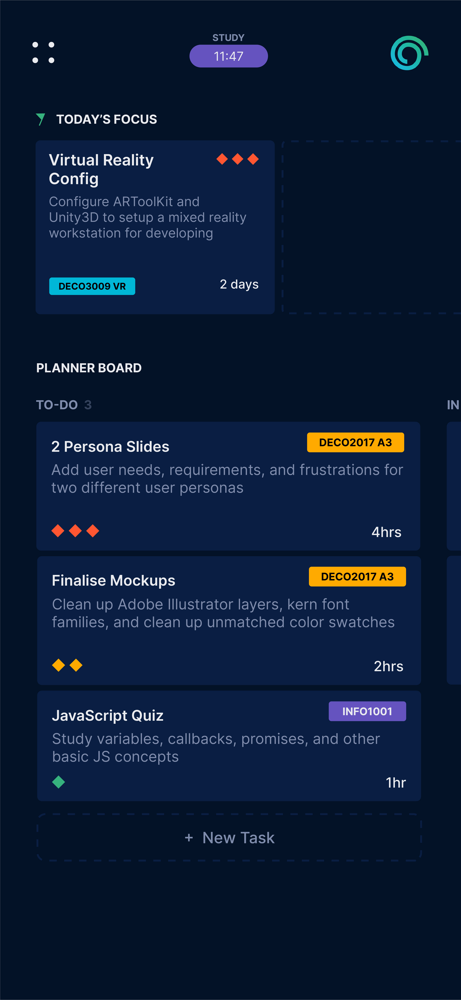
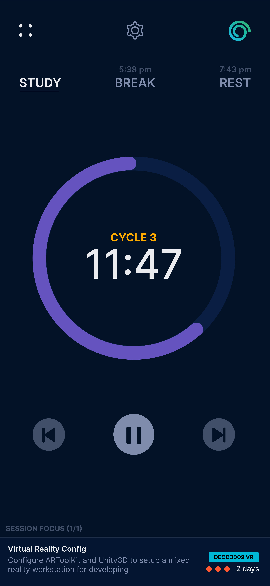
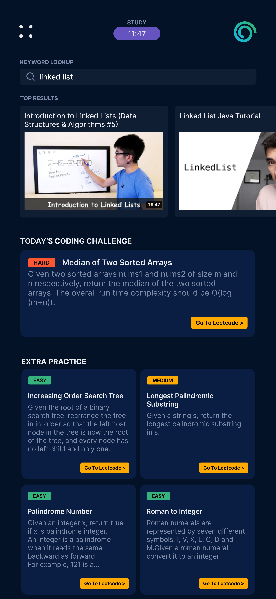

APR 2022 - JUN 2022
SYDNEY, NSW
Spiral.io Web Design & Development
DESCRIPTION
Spiral.io is a study tool developed specifically for programming and computer science students, designed to maximize coding productivity and minimize burnout.
The website is a composite of planning and content tools iteratively designed after thorough user research and competitive analysis.
After crafting a development pitch, I spent several weeks implementing a functional prototype using HTML, Sass, and Node.js runtime environment.
🡵 GitHub Repository
PROJECT TYPE
University Project
PROJECT ROLE
TOOLKIT
Design Brief
PROJECT OBJECTIVE
The overall assessment required me to design and prototype a web application to help students manage their study sessions. My initial task involved researching and identifying which subgroup of this demographic I thought could benefit the most from such a tool.
I would then need to conduct the necessary research concerning my target audience, and construct a proposal pitch consisting of relevant user personas and service mockups.
FUNCTIONAL SPECIFICATIONS
The functional requirements for the design brief were dictated by a competitive analysis of existing study services, which identified task, time, and content management tools as key ingredients. Thus, the feature requirements were split into three main components:
TASK MANAGEMENT
Kanban Board
Users should be able to enter individual tasks, along with the due date and priority. They should also be able to add and arrange tasks and columns in the kanban board.
TIME MANAGEMENT
Pomodoro Timer
Users should be able to start, stop, and reset the timer. They should also be able to edit the default session and break times.
CONTENT MANAGEMENT
Dictionary Lookup
Users should be able to lookup definitions of words from an online API, as well as see suggested synonyms of the word they looked up.
TASK MANAGEMENT
Kanban Board
Users should be able to enter individual tasks, along with the due date and priority. They should also be able to add and arrange tasks and columns in the kanban board.
TIME MANAGEMENT
Pomodoro Timer
Users should be able to start, stop, and reset the timer. They should also be able to edit the default session and break times.
CONTENT MANAGEMENT
Dictionary Lookup
Users should be able to lookup definitions of words from an online API, as well as see suggested synonyms of the word they looked up.
User Research
TARGET AUDIENCE
Having prior interest and experience within the realm of computer science, I selected programming and software engineering students as my target audience for the study platform.
As a former Computer Science student at the University of Berkeley, California, I was aware of the courseload's rigor, and hypothesized that a tailored digital service could dramatically improve study habits and course marks for overwhelmed students.
USER PERSONAS
I conducted relevant secondary research and performed an online ethnography involving student learning patterns, coding productivity tools, and user frustrations. From there, I constructed several personas to identify current user goals, motivations, and frustrations.


Research Insights
🎯
PROBLEM STATEMENT
The rigor of computer science and software engineering courses, paired with external commitments, leads to chronic
burnout and inconsistency within university students looking to graduate and get hired.
👑
VISION STATEMENT
Spiral.io aims to address this issue by creating a study structure to encourage consistent and manageable course
progress, as well as providing daily supplementary challenges and practice material.
KEY TAKEAWAYS
Some insights unique to programming students include habitually nocturnal study patterns, chronic burnout, and frequent access to digital resources.
1
Programming students are most active at night, because of course workloads and part-time jobs
2
Students spend anywhere from 4-10 hours a day in classes and studying, which often leads to chronic burnout
3
Students habitually use online resources (StackOverflow, GitHub, LeetCode) to help them study
4
Students primary goals are to build a coding portfolio and have a job offer by the time they graduate
Development Proposal Video
Design & Iteration
CONCEPT SKETCHES
I decided to separate the website content into three work sections (“Plan”, “Focus”, “Learn”), to allow for mental compartmentalisation of study structure.
I added categories to the Kanban board for task grouping between classes, and also added a "Today's Focus" section to encourage pointedness and pre-study task planning, while avoiding overexertion.



VISUAL & COLOR EXPLORATION
I used the color palette from the Atlassian Design System to ensure visual accessibility and researched color psychology.
I also chose to re-use familiar component styles and visuals from popular coding services that students mentioned in my online ethnography (e.g. GitHub, VSCode, LeetCode).
Since the majority of students would either be learning or working on these platforms, utilising a similar visual style would allow students to feel more comfortable in the Spiral.io environment,
as well as mentally compartmentalise their work.
Based on my research, I also decided on a dark palette to reduce eye strain for nocturnal developers, and an off-black base to avoid high contrast.
Mockups


